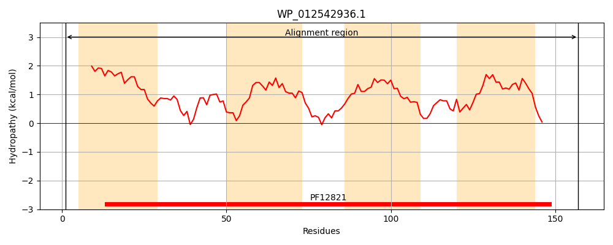
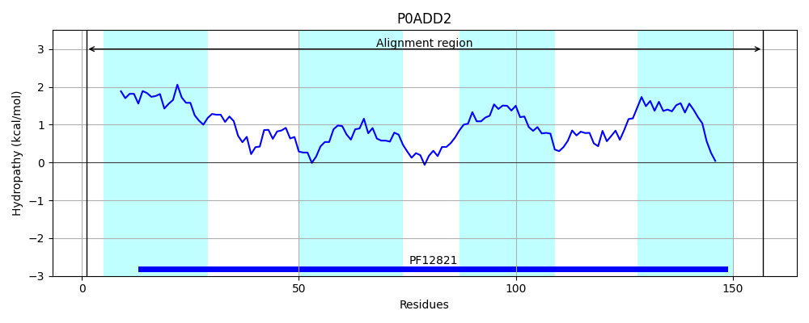
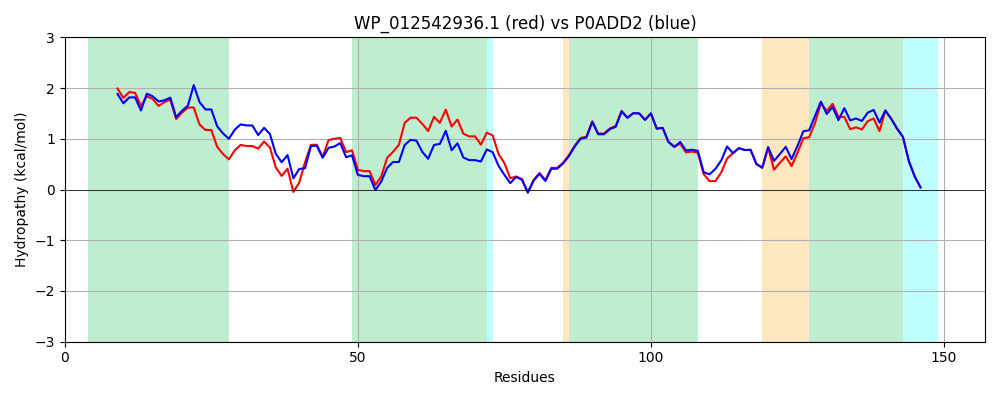

Hit Accession: P0ADD2
Hit TCID: 2.A.79.2.1
Hit Description: gnl|BL_ORD_ID|8750 gnl|TC-DB|P0ADD2|2.A.79.2.1 UPF0442 protein YjjB OS=Escherichia coli (strain K12) OX=83333 GN=yjjB PE=1 SV=2
Mach Len: 157
e:0.000000
Query TMS Count : 4
Hit TMS Count: 4
TMS-Overlap Score: 4.450000
Predicted Substrates:CHEBI:15595;malate(2-), CHEBI:30031;succinate(2-), CHEBI:29806;fumarate(2-)
BLAST Alignment:
Score: 702 , Bit scores: 275 bits, E-value: 1.6e-96, Alignment length: 157, Percentage identity: 83
Query: 1 MGIISFIFALAEDMLLAAIPAVGFAMVFNVPQRALRWCALLGAIGHGSRMVMMSAGFNIEWATFLAALLVGSIGIQWSRWYLAHPKIFTVAAVIPMFPGISAYTAMISAVKISHFGYSEEMMILLLSNFLKASSIVGALSIGLSIPGLWLYRKRPRV 157
MG+I F+ ALA+DM+LAAIPAVGFAMVFNVP RALRWCALLG+IGHGSRM++M++G NIEW+TF+A++LVG+IGIQWSRWYLAHPK+FTVAAVIPMFPGISAYTAMISAVKIS GYSE +MI LL+NFL ASSIVGALSIGLSIPGLWLYRKRPRV
Sbjct: 1 MGVIEFLLALAQDMILAAIPAVGFAMVFNVPVRALRWCALLGSIGHGSRMILMTSGLNIEWSTFMASMLVGTIGIQWSRWYLAHPKVFTVAAVIPMFPGISAYTAMISAVKISQLGYSEPLMITLLTNFLTASSIVGALSIGLSIPGLWLYRKRPRV 157 | Protein Hydropathy Plots: |
|---|
|  |  |
Pairwise Alignment-Hydropathy Plot:
|
|---|
|  |